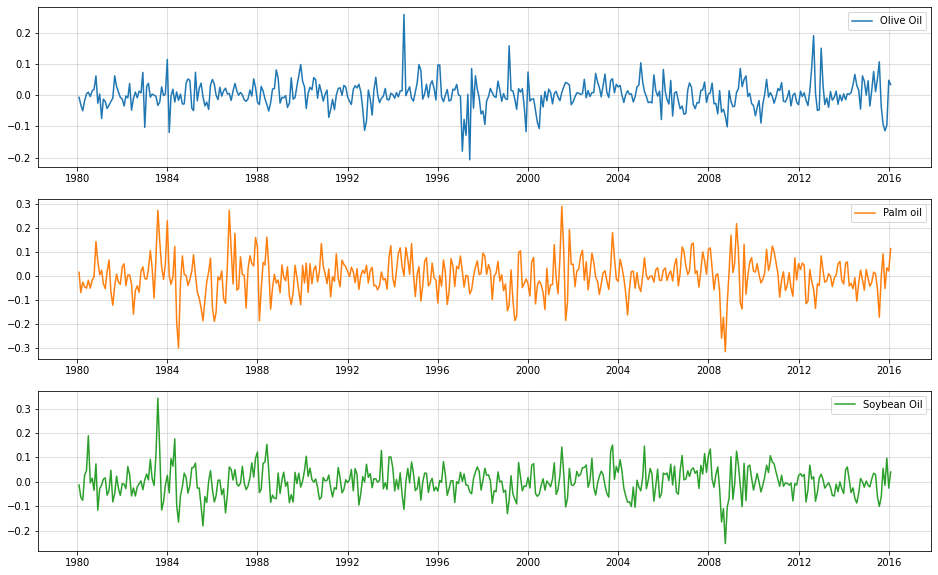

Multivariate, probabilistic time-series forecasting with LSTM and Gaussian Copula
Time Series
Neural Networks
Author
Sarem
Published
June 30, 2022
Introduction
As commonly known, LSTMs (Long short-term memory networks) are great for dealing with sequential data. One such example are multivariate time-series data. Here, LSTMs can model conditional distributions for complex forecasting problems.
For example, consider the following conditional forecasting distribution: \[
\begin{gathered}
p\left(y_{t+1} \mid y_t\right)=\mathcal{N}\left(y_{t+1} \mid \mu_\theta\left(y_t\right), \Sigma_\theta\left(y_t\right)\right) \\
\mu_\theta\left(y_t\right)=f\left(y_t, h_t\right)_\mu \\
\Sigma_\theta\left(y_t\right)=L_\theta\left(y_t\right) L_\theta\left(y_t\right) \\
L_\theta\left(y_t\right)=f\left(y_t, h_t\right)_L
\end{gathered}
\] - \(f\left(y_t, h_t\right)_\mu:=\) LSTM mean output given hidden state \(h_t\) - \(f\left(y_t, h_t\right)_L:=\) LSTM covariance cholesky output given hidden state \(h_t\)
Notice that we predict the cholesky decomposition of the conditional covariance matrix. This ensures that the resulting covariance matrix is positive semi-definite. Now, this approach would allow us to model quite complex dynamical problems.
On the other hand, however, the degrees of freedom in this model will rapidly explode with increasing dimensionality D of the multivariate time-series. After all, we need (D^2+D)/2 LSTM outputs for the covariance structure alone. This can clearly lead to overfitting quite easily.
Another disadvantage is the assumption of a conditionally Gaussian time-series. As soon as our time-series is not a vector of real-numbers, this model does not work anymore.
Thus, a potential solution should satisfy two properties:
Allow to parsimoniously handle high-dimensional time-series
Work with conditionally non-Gaussian time-series
LSTMs with Gaussian Copula
As a potential solution, we could separate the dependency among the time-series from their marginal distribution. Hence, let us presume constant conditional dependency between the time-series but varying conditional marginals. This indicates that a Copula model might be a good approach - for simplicity, we use a Gaussian Copula.
Since the basics of the Gaussian Copula have been discussed in this previous article, we won’t repeat them here.
In summary, our model looks as follows: \[
p\left(y_{t+1} \mid y_t\right)=\prod_{d=1}^D p_d\left(y_{t+1}^{(d)} \mid \theta_d\left(y_t\right)\right) \cdot c\left(F\left(y_{t+1}^{(1)} \mid \theta_1\left(y_t\right)\right), \ldots, F\left(y_{t+1}^{(D)} \mid \theta_D\left(y_t\right)\right) ; R\right)
\] - \(p_d:=\mathrm{d}\)-th marginal forecast density of \(\mathrm{d}\)-th time-series - \(y_{t+1}^{(d)}\) - \(\theta_d\left(y_t\right)=f\left(y_t ; h_t\right)_{\theta_d}:=\mathrm{d}\)-th conditional parameter vector modelled as the output of the LSTM - \(c(\cdot, \ldots, \cdot ; R):=\) Gaussian Copula density with dependency parameter matrix \(R\) - \(F\left(y_{t+1}^{(d)} \mid \theta_d\left(y_t\right)\right):=\) d-th marginal forecast c.d.f. This allows us to deal with arbitrary continuous marginal distributions. In fact, we could even work with mixed continuous marginal distributions. In order to achieve sparsity in the copula parameter matrix, we could, for example, add a regularization term as is typically done when estimating high-dimensional covariance matrices.
The only drawback now is the assumption of a constant dependency over time. If this contradicts the data at hand, we might need to model the copula parameter in an auto-regressive manner as well. A low-rank matrix approach could preserve some parsimony then.
Implementation (sketch, not too much explanations from here on)
Data taken from https://www.kaggle.com/datasets/vagifa/usa-commodity-prices. We will use only culinary oil price, presuming that there is some underlying correlation among them.
import pandas as pdimport matplotlib.pyplot as pltdf = pd.read_csv("../data/commodity-prices-2016.csv")df = df.set_index("Date")df.index = pd.to_datetime(df.index)oils = df[["Olive Oil","Palm oil","Soybean Oil"]]oils.plot(figsize=(16,8))plt.grid(alpha=0.5)
Use log-difference prices for standardization
(i.e. ‘log-returns’)
import numpy as npoils_ld = np.log(oils).diff().iloc[1:,:]fig, ax = plt.subplots(3,1, figsize = (16,10))ax[0].plot(oils_ld["Olive Oil"],label="Olive Oil",color="C0")ax[1].plot(oils_ld["Palm oil"], label="Palm oil",color="C1")ax[2].plot(oils_ld["Soybean Oil"], label="Soybean Oil",color="C2")[a.grid(alpha=0.5) for a in ax][a.legend() for a in ax]

Create lag-1 features as input
We might want to go to higher lags for increased accuracy.
oils_lagged = pd.concat([oils_ld.shift(1),oils_ld],1).iloc[1:,:]oils_lagged.columns = [c+"_l1"for c in oils_ld.columns] +list(oils_ld.columns)oils_lagged
/var/folders/2d/hl2cr85d2pb2kfbmsng3267c0000gn/T/ipykernel_61976/3710246824.py:1: FutureWarning: In a future version of pandas all arguments of concat except for the argument 'objs' will be keyword-only.
oils_lagged = pd.concat([oils_ld.shift(1),oils_ld],1).iloc[1:,:]
Create the model (https://www.tensorflow.org/probability/examples/Gaussian_Copula#:~:text=Gaussian-,Copula,-To%20illustrate%20how)
import tensorflow as tffrom tensorflow import kerasfrom tensorflow.keras import layersimport tensorflow_probability as tfptfd = tfp.distributionstfb = tfp.bijectorsclass GaussianCopulaTriL(tfd.TransformedDistribution):def__init__(self, loc, scale_tril):super(GaussianCopulaTriL, self).__init__( distribution=tfd.MultivariateNormalTriL( loc=loc, scale_tril=scale_tril), bijector=tfb.NormalCDF(), validate_args=True, name="GaussianCopulaTriLUniform")class CopulaLSTMModel(tf.keras.Model):def__init__(self, input_dims=3, output_dims=3):super().__init__()self.input_dims = input_dimsself.output_dims = output_dims#use LSTM state to ease training and testing state transitionself.c0 = tf.Variable(tf.ones([1,input_dims]), trainable =True) self.h0 = tf.Variable(tf.ones([1,input_dims]), trainable =True)self.lstm = layers.LSTM(input_dims, batch_size=(1,1,input_dims), return_sequences=True, return_state=True )self.mean_layer = layers.Dense(output_dims)self.std_layer = layers.Dense(output_dims,activation=tf.nn.softplus)self.chol = tf.Variable(tf.random.normal((output_dims,output_dims)), trainable =True)def call(self, inputs): lstm_out =self.lstm(inputs, initial_state = [self.c0, self.h0])[0] means =self.mean_layer(lstm_out) stds =self.std_layer(lstm_out) distributions = tfd.Normal(means, stds)return distributionsdef call_with_state(self, inputs, c_state, h_state):#explicitly use and return the initial state - primarily for forecasting lstm_out, c_out, h_out =self.lstm(inputs, initial_state = [c_state, h_state]) means =self.mean_layer(lstm_out) stds =self.std_layer(lstm_out) distributions = tfd.Normal(means, stds)return distributions, c_out, h_outdef get_normalized_covariance(self): unnormalized_covariance =self.chol@tf.transpose(self.chol) normalizer = tf.eye(self.output_dims) *1./(tf.linalg.tensor_diag_part(unnormalized_covariance)**0.5)return normalizer@unnormalized_covariance@normalizerdef conditional_log_prob(self, inputs, targets): marginals =self.call(inputs) marginal_lpdfs = tf.reshape(marginals.log_prob(targets),(-1,self.output_dims)) copula_transformed = marginals.cdf(y_train) normalized_covariance =self.get_normalized_covariance() #need covariance matrix with unit diagonal for Gaussian Copula copula_dist = GaussianCopulaTriL(loc=tf.zeros(self.output_dims),scale_tril = tf.linalg.cholesky(normalized_covariance)) copula_lpdfs = copula_dist.log_prob(copula_transformed)return tf.reduce_mean(tf.math.reduce_sum(marginal_lpdfs,1) + copula_lpdfs)def train_step(self, data):#custom training steps due to custom loglikelihood-loss x, y = datawith tf.GradientTape() as tape: loss =-self.conditional_log_prob(x,y) trainable_vars =self.trainable_weights +self.lstm.trainable_weights +self.mean_layer.trainable_weights +self.std_layer.trainable_weights gradients = tape.gradient(loss, trainable_vars)self.optimizer.apply_gradients(zip(gradients, trainable_vars))return {"Current loss": loss}def sample_forecast(self, X_train, y_train, forecast_periods =12):#this is still quite slow; should be optimized if used for a real-world problem normalized_covariance =self.get_normalized_covariance() copula_dist = tfp.distributions.MultivariateNormalTriL(scale_tril = tf.linalg.cholesky(normalized_covariance)) copula_sample = tfp.distributions.Normal(0,1).cdf(copula_dist.sample(forecast_periods)) sample = [] input_current = y_trainfor t inrange(forecast_periods): _, c_current, h_current =self.lstm(X_train) new_dist, c_current, h_current =self.call_with_state(tf.reshape(input_current,(1,1,self.input_dims)), c_current, h_current) input_current = new_dist.quantile(tf.reshape(copula_sample[t,:],(1,1,self.output_dims))) sample.append(tf.reshape(input_current,(1,self.output_dims)).numpy().reshape(1,self.output_dims))return np.concatenate(sample)
Train the model
np.random.seed(123)tf.random.set_seed(123)test = CopulaLSTMModel()test.compile(optimizer="adam")test.fit(X_train.reshape(1,-1,3),y_train.reshape(1,-1,3), epochs =250, verbose=0) #relatively fast
<keras.callbacks.History at 0x1469271c0>
Raw log-diff predictions
np.random.seed(123)tf.random.set_seed(123)samples = [test.sample_forecast(X_train.reshape(1,-1,3),y_train[-1,:].reshape(1,1,3)) for _ inrange(500)] #very slow, grab a coffee or twosamples_restructured = [np.concatenate(list(map(lambda x: x[:,i].reshape(-1,1),samples)),1) for i inrange(3)]means = [np.mean(s,1) for s in samples_restructured]lowers = [np.quantile(s,0.05,1) for s in samples_restructured]uppers = [np.quantile(s,0.95,1) for s in samples_restructured]fig, ax = plt.subplots(3,1, figsize = (16,10))[ax[i].plot(y_test[:,i],label=oils.columns[i],color="C{}".format(i)) for i inrange(3)][ax[i].plot(means[i], label ="Mean forecast", color ="red") for i inrange(3)][ax[i].fill_between(np.arange(len(y_test)),lowers[i],uppers[i], label ="Forecast interval", color="red", alpha=0.2) for i inrange(3)][a.grid(alpha=0.5) for a in ax]
Actual price predictions
samples_retrans = [np.exp(np.log(oils.iloc[-13,i+3])+np.cumsum(samples_restructured[i],0)) for i inrange(3)]means_retrans = [np.mean(s,1) for s in samples_retrans]lowers_retrans = [np.quantile(s,0.025,1) for s in samples_retrans]uppers_retrans = [np.quantile(s,0.975,1) for s in samples_retrans]fig, ax = plt.subplots(3,1, figsize = (16,10))[ax[i].plot(oils.values[:,i],label=oils.columns[i],color="C{}".format(i)) for i inrange(3)][ax[i].set_xlim((1,len(oils))) for i inrange(3)][ax[i].plot(np.arange(len(oils)-13,len(oils)),np.concatenate([[oils.iloc[-13,i]],means_retrans[i]]), label ="Mean forecast", color ="purple") for i inrange(3)][ax[i].fill_between(np.arange(len(oils)-13,len(oils)),np.concatenate([[oils.iloc[-13,i]],lowers_retrans[i]]),np.concatenate([[oils.iloc[-13,i]],uppers_retrans[i]]), label ="Forecast interval", color="purple", alpha=0.2) for i inrange(3)][a.grid(alpha=0.5) for a in ax]
Sample trajectories
fig, ax = plt.subplots(3,1, figsize = (16,10))for s inrange(500): [ax[i].plot(np.arange(len(oils)-13,len(oils)),np.concatenate([[oils.iloc[-13,i+3]],samples_retrans[i][:,s]]), label ="Mean forecast", color ="purple", lw=0.1) for i inrange(3)][ax[i].plot(oils.values[:,i],label=oils.columns[i],color="C{}".format(i), lw=5) for i inrange(3)][ax[i].set_xlim((375,len(oils))) for i inrange(3)][a.grid(alpha=0.5) for a in ax]
Conclusion
This was just a rough collection of ideas on how a Copula-LSTM time-series model could look like. Feel free to contact me for more information.
References
[1] Hochreiter, Sepp; Schmidhuber, Jürgen. Long short-term memory. Neural computation, 1997, 9.8, p. 1735-1780.
[2] Nelsen, Roger B. An introduction to copulas. Springer Science & Business Media, 2007.